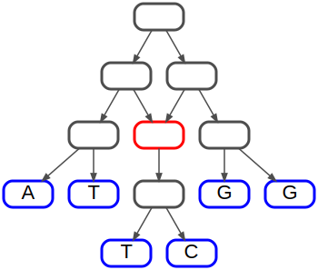
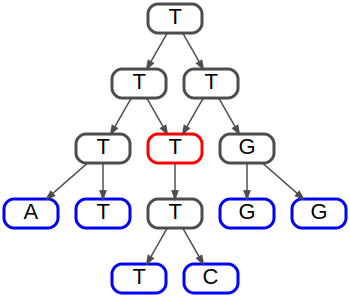
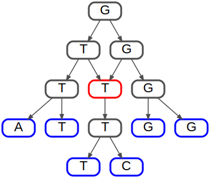
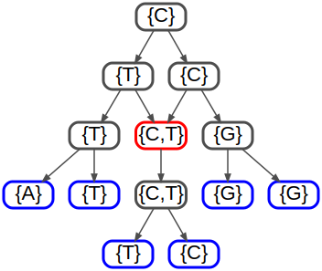
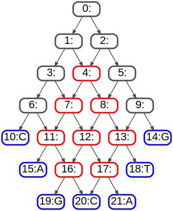
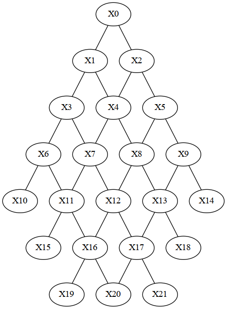
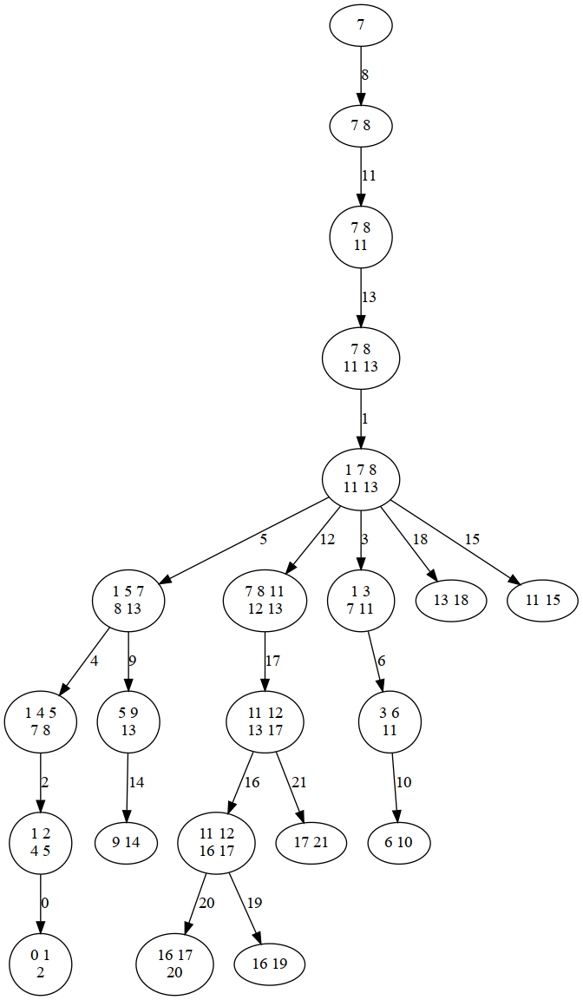
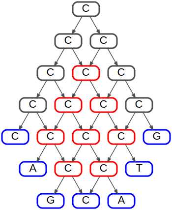

Online resources and software environment
This document is hosted online as Jupyter notebook with precomputed results. Download this file to view, edit and run examples in Jupyter.
We recommend to install all required software using Mamba (or Conda) and PIP.
mamba create -n infrared -c conda-forge infrared jupyter jupytext matplotlib seaborn graphviz
mamba activate infrared
pip install graphviz
mamba deactivate infrared
Start the Jupyter notebook server after activating the environment
mamba activate infrared
jupyter notebook
The original sources are part of the Infrared distribution and hosted on Gitlab (in Jupytext light Script format).
The problem(s) of network parsimony
The small parsimony problem is typically defined over phylogenetic trees. First assuming that traits are inherited independently of each other, we consider the problem for a single trait with possible characters in set \(C\). The input of the small tree parsimony problem is a tree and a labeling of the leaves by characters in \(C\). The problem asks for a labeling of all tree nodes that minimizes the number of label differences ("mutations") over all tree edges.
Network parsimony generalizes the notion of parsimony from trees to networks.
We consider three types of small network parsimony problems the literature:
- hardwired parsimony
- softwired parsimony
- parental parsimony
In all of these problems one is given a rooted network, i.e. a finite directed acyclic graph (DAG) \(G=(V,E)\) with one distinct root node \(v_r\) together with a labeling of the leaves (or generally a partial labeling \(\phi: V\rightarrow 2^C\). The task is to find a labeling of the nodes that minimizes a specific parsimony criterion.
In our considerations we follow the popular restriction to networks with indegree of at most two.
Hardwired parsimony
Given a rooted network and partial node labeling, one minimizes the number of mutations over all directed edges of the network, i.e.
\(PS_{hardwired} = \min_\psi \sum_{(u,v)\in E} \psi(u)\neq\psi(v)\)
where \(\psi: V\rightarrow C\) s.t. \(\forall v\in V: \psi(v)\in\phi(v)\).
This is a formal extension of tree parsimony to networks; one accounts for mutations along all edges.
Softwired parsimony
Given a rooted network and partial node labeling, one minimizes the number of mutations over all directed edges of a directed spanning tree of the network (which effectively selects a single parent for every reticulation node), i.e.
\(PS_{softwired} = \min_{\psi, T} \sum_{(u,v)\in E_T} \psi(u)\neq\psi(v),\)
where \(\psi: V\rightarrow C\) s.t. \(\forall v\in V: \psi(v)\in\phi(v)\).
The idea of this model is that the network specifies the set of potential phylogenetic trees over which one solves the small tree parsimony problem.
Parental parsimony
This model considers the inheritance of allels in a polyploid setting. Characters can be mutated in children and/or collected from the ancestors (by allopoloploidy). (We present the problem from the lineage perspective!) Consequently, nodes are labeled by sets of characters.
\(PS_{parental} = \min_{f} \sum_{v\in V} \textrm{cost}_f(v),\)
where
- \(f: V\rightarrow 2^C\)
- \(f(v_r) = 1\)
- \(|f(v)| \leq \sum_{u\text{ parent of }v} |f(u)|\)
- $\textrm{cost}_f(v) = |f(v) \setminus \bigcup_{u\textrm{ parent of }v} f(u)|$
import infrared as ir
from collections import defaultdict
import random
class DAG:
"""A simple class reprenting a rooted DAG
"""
def __init__(self, adjacency):
adjacency = {k:(v if type(v)==list else [v]) for k,v in adjacency.items()}
nodes = set(adjacency.keys())
edges = []
for x in adjacency:
nodes.update(adjacency[x])
edges.extend((x,y) for y in adjacency[x])
self._nodes = nodes
self._edges = edges
self._parents=defaultdict(list)
for u,v in self._edges:
self._parents[v].append(u)
self._children=defaultdict(list)
for u,v in self._edges:
self._children[u].append(v)
self._root = None
for v in self.nodes:
if self.parents(v)==[]:
assert(self._root==None)
self._root = v
assert(self._root!=None)
assert(self._parents[self._root]==[])
for node in self._nodes:
if node==self._root: continue
assert(self._parents[node]!=[])
def parents(self, node):
return self._parents[node]
def children(self, node):
return self._children[node]
@ property
def root(self):
return self._root
@ property
def edges(self):
return self._edges
@ property
def nodes(self):
return self._nodes
@ property
def reticulation_nodes(self):
return [v for v in self._nodes if len(self.parents(v))>1]
@ property
def nonreticulation_nodes(self):
return [v for v in self._nodes if len(self.parents(v))==1]
@ property
def leaves(self):
return [v for v in self._nodes if self.children(v)==[]]
def show(self, labels=None, shownames=False):
import graphviz
G=graphviz.Digraph(engine="dot",
graph_attr=dict(),
node_attr=dict(fontsize="22pt", fontname="Helvetica",
penwidth="3.0", fontcolor="black",
shape="rectangle", style="rounded",
height="0.4", margin="0.03"),
edge_attr=dict(color="gray30", penwidth="1.5", arrowsize="0.8"))
for v in self.nodes:
try:
label = labels[v]
assert(label!=None)
except:
label = ""
if type(label)==set:
label='{'+','.join(sorted(map(str,label)))+'}'
if shownames:
label = f"{v}:{label}"
color = "gray30"
if len(self._parents[v])>1: color="red"
if len(self._children[v])==0: color="blue"
G.node(str(v), label=str(label), color=color)
for v,u in self.edges:
G.edge(str(v),str(u))
return G
def print(self, labels):
for v in self.nodes:
print(f'{v}\'{labels[v]}\' -> {self.children(v)}')
An example input instance
characters = ["A","C","G","T"]
def a_to_cs(assignment):
"""Assignement to characters"""
return [characters[x] for x in assignment.values()]
network = DAG({0:[1,2], 1:[3,4], 2:[4,5], 4:6, 3:[7,8], 6:[9,10], 5:[11,12]})
leaves = ['A','T','T','C','G','G']
leaves = {k:v for k,v in zip(network.leaves,leaves)}
dot = network.show(leaves)
dot.render('input-network')
dot

Model hardwired parsimony
Define a hamming distance function between nodes
ir.def_function_class("Distance",
lambda u,v: [u,v],
lambda psi_u,psi_v: psi_u != psi_v
)
Construct the model
model = ir.Model()
model.add_variables(len(network.nodes), len(characters))
model.add_functions([Distance(u,v) for u,v in network.edges],
'score')
model.set_feature_weight(-1, 'score')
for k,v in leaves.items():
val = characters.index(v)
model.restrict_domains(k, (val,val))
Run optimization
optimizer = ir.Optimizer(model)
best_score = -optimizer.evaluate()
best = optimizer.optimize()
print(f'Score: {best_score}')
dot = network.show(a_to_cs(best))
dot.render("hardwired-network",view=False)
dot
Score: 3.0

Model softwired parsimony with additional state (effectively keeps tree width!)
Define hamming distance for reticualtions
ir.def_function_class("ReticulationDistance",
lambda u,v,x,y: [u, v, x],
lambda psi_u, psi_v, valx, y: (psi_u != psi_v) and valx==y
)
Construct model
model = ir.Model()
n=len(network.nodes)
model.add_variables(n, len(characters))
model.add_functions([Distance(network.parents(v)[0],v)
for v in network.nonreticulation_nodes],
'score')
r = len(network.reticulation_nodes)
model.add_variables(r,2)
for parent in range(2):
model.add_functions([ReticulationDistance(network.parents(v)[parent],v,n+i,parent)
for i,v in enumerate(network.reticulation_nodes)],
'score')
model.set_feature_weight(-1, 'score')
for k,v in leaves.items():
val = characters.index(v)
model.restrict_domains(k, (val,val))
Run optimization
optimizer = ir.Optimizer(model)
best_score = -optimizer.evaluate()
best = optimizer.optimize()
print(f'Score: {best_score}')
dot = network.show(a_to_cs(best))
dot.render("softwired-network",view=False)
dot
Score: 3.0

Model softwired parsimony with ternary constraint
Define hamming distance for reticualtions
ir.def_function_class("ReticulationDistance",
lambda u0,u1,v: [u0, u1, v],
lambda psi_u0,psi_u1,psi_v: min(psi_u0 != psi_v,psi_u1 != psi_v)
)
Construct model
model = ir.Model()
model.add_variables(len(network.nodes), len(characters))
model.add_functions([Distance(network.parents(v)[0],v)
for v in network.nonreticulation_nodes],
'score')
model.add_functions([ReticulationDistance(network.parents(v)[0],network.parents(v)[1],v)
for v in network.reticulation_nodes],
'score')
model.set_feature_weight(-1, 'score')
for k,v in leaves.items():
val = characters.index(v)
model.restrict_domains(k, (val,val))
Run optimization
optimizer = ir.Optimizer(model)
best_score = -optimizer.evaluate()
best = optimizer.optimize()
print(f'Score: {best_score}')
network.show(a_to_cs(best))
Score: 3.0
Model parental parsimony
Model character sets as integer values
def cs2v(cset):
val=0
for i,c in enumerate(characters):
if c in cset:
val += 2**i
return val
def v2cs(val):
x=set()
for c in characters:
if val & 1:
x.add(c)
val = val >> 1
return x
def a_to_csets(assignment):
"""Assignment to characters sets"""
return [v2cs(val) for val in assignment.values()]
Define distances on set labels
ir.def_function_class("SetDistance",
lambda u,v: [u, v],
lambda f_u, f_v: len(v2cs(f_v)-v2cs(f_u)))
ir.def_function_class("ReticulationSetDistance",
lambda u0, u1, v: [u0, u1, v],
lambda f_u0, f_u1, f_v: len(v2cs(f_v)-v2cs(f_u0).union(v2cs(f_u1))))
Define constraint types
ir.def_constraint_class('SetSize',
lambda v,size: [v],
lambda f_v, size: len(v2cs(f_v))==size)
ir.def_constraint_class('SetSizeRel',
lambda u,v: [u, v],
lambda f_u, f_v: len(v2cs(f_v)) <= len(v2cs(f_u)))
ir.def_constraint_class('ReticulationSetSizeRel',
lambda u0, u1, v: [u0, u1, v],
lambda f_u0, f_u1, f_v: len(v2cs(f_v)) <= len(v2cs(f_u0).union(v2cs(f_u1))))
Construct model
model = ir.Model()
model.add_variables(len(network.nodes), 2**len(characters))
model.add_constraints(SetSize(network.root,1))
model.add_constraints(SetSizeRel(network.parents(v)[0],v)
for v in network.nonreticulation_nodes)
model.add_constraints(ReticulationSetSizeRel(network.parents(v)[0],network.parents(v)[1],v)
for v in network.reticulation_nodes)
model.add_functions([SetDistance(network.parents(v)[0],v)
for v in network.nonreticulation_nodes],
'score')
model.add_functions([ReticulationSetDistance(network.parents(v)[0],network.parents(v)[1],v)
for v in network.reticulation_nodes],
'score')
model.set_feature_weight(-1, 'score')
for k,v in leaves.items():
val = cs2v(v)
model.restrict_domains(k, (val,val))
Run optimization
optimizer = ir.Optimizer(model)
best = optimizer.optimize()
best_score = -optimizer.evaluate()
print(f'Score: {best_score}')
dot = network.show(a_to_csets(best))
dot.render("parental-network",view=False)
dot
Score: 3.0

APPENDIX
Grid networks
Construct grid networks as a simple family of networks that allow us to enforce high tree width for decomposition.
def grid(n):
adj = defaultdict(list)
offset=0
for i in range(n-1):
for j in range(offset,offset+i+1):
adj[j]=[j+i+1,j+i+2]
offset+=i+1
offset0 = offset
offset+=n
for i in reversed(range(n-1)):
adj[offset0].append(offset)
for j in range(1,i+2):
adj[offset0+j-1].append(offset+j)
adj[offset0+j].append(offset+j)
adj[offset0+i+1].append(offset+i+2)
offset0 = offset+1
offset+=i+3
return adj
network=DAG(grid(4))
leaves = {k:random.choice(characters) for k in network.leaves}
network.show(leaves,shownames=True)

model = ir.Model()
model.add_variables(len(network.nodes), len(characters))
model.add_functions([Distance(u,v) for u,v in network.edges],
'score')
model.set_feature_weight(-1, 'score')
for k,v in leaves.items():
val = characters.index(v)
model.restrict_domains(k, (val,val))
optimizer = ir.Optimizer(model)
print("TW:",optimizer.treewidth())
best_score = -optimizer.evaluate()
best = optimizer.optimize()
print(f'Score: {best_score}')
TW: 4
Score: 5.0
from IPython.display import Image
import re
filename = 'dependency_graph.dot'
model.write_graph(filename, True)
ir.dotfile_to_png(filename)
filename = re.sub(r"dot$","png",filename)
Image(filename=filename,width=300)

filename="treedecomp"
optimizer.plot_td(filename,'png')
Image(filename=filename+".png",width=400)

network.show(a_to_cs(best))

 1.9.4
1.9.4